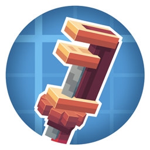
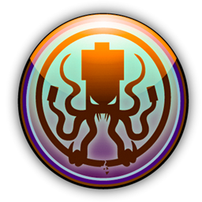
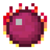
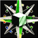
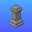
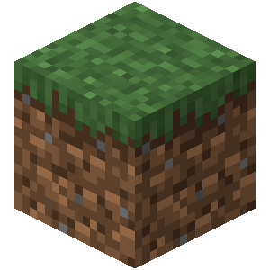

Catalogo de Mods
Explore mods incríveis que adicionam novas mecânicas, itens e muito mais ao seu Minecraft!

Create
Adicione máquinas e engenharias incríveis ao seu mundo com o mod Create!
Tecnologia
Automação
Ver Mais

Orespawn
Explore um mundo cheio de novas criaturas, armaduras e bosses íncriveis com o Orespawn
Criaturas
Aventura
Ver Mais

Project E
Descubra ferramentas, objetos e dispositivos alquímicos poderosos, e use essa EMC para criar novos itens.
Magia
Energia
Ver Mais
Mekanism
Conheça um conjunto de máquinas de níveis baixo, médio e alto para modernizar sua casa arcaica e seu processamento de recursos ineficiente.
Tecnologia
Armazenamento
Ver Mais

JourneyMap
Mapeamento em tempo real no jogo ou em um navegador da web enquanto você explora.
Mapa
Informações
Ver Mais

Just Enough Items
JEI é um mod para Minecraft que permite visualizar itens e receitas.
Mapa
Informações
Ver Mais

AppleSkin
Este é um mod que funciona principalmente no lado do cliente, mas precisa estar no servidor para exibir valores precisos de saturação/exaustão no cliente.
Comida
Informações
Ver Mais

Waystones
Adiciona blocos de teletransporte aos quais o jogador pode retornar após serem ativados, seja através de um Pergaminho de Teletransporte.
Transporte
Mágico
Ver Mais

Sophisticated Backpacks
Mais um mod de mochila, desta vez com uma mochila que você pode colocar no mundo.
Armazenamento
Armaduras
Ver Mais

Mahou Tsukai
Um mod de magia focado em efeitos especiais e na singularidade dos feitiços.
Mágico
RPG
Ver Mais

Mods
Melhore sua experiência

Biomas
Descubra novos biomas

Mobs
Conheça os mobs

Curiosidades
Fatos incríveis sobre Minecraft